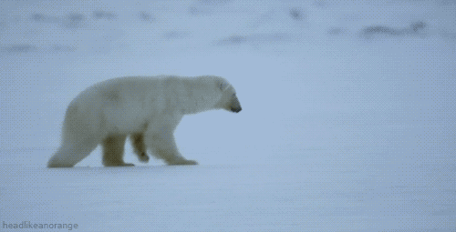
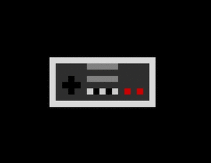
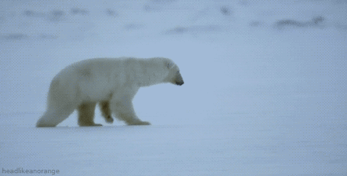
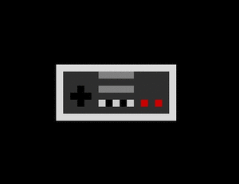

Click to go back to the home page!
What do I dream of in my future?
In my future, I plan on becoming a Wildlife Biologist. I have always loved animals and wanted to meet many exotic ones in the wild. What I mean by exotic is animals that are not pets, such as big cats, otters, wolfs, elephants, and polar bears. I also tend to daydream a lot about a fantasy world I made up. I have made that fantasy world of mine into a video game style. I have come up with storylines, boss fights, plot twists and characters. In fact, all the characters I drew that I talked about on my home page are characters I have made up to be in my video game world. One of them is acually how I would see myself if I was in that world.

 


